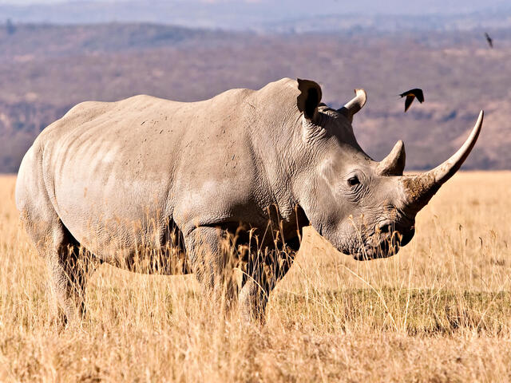
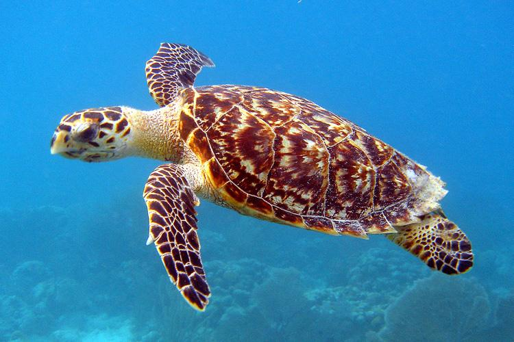
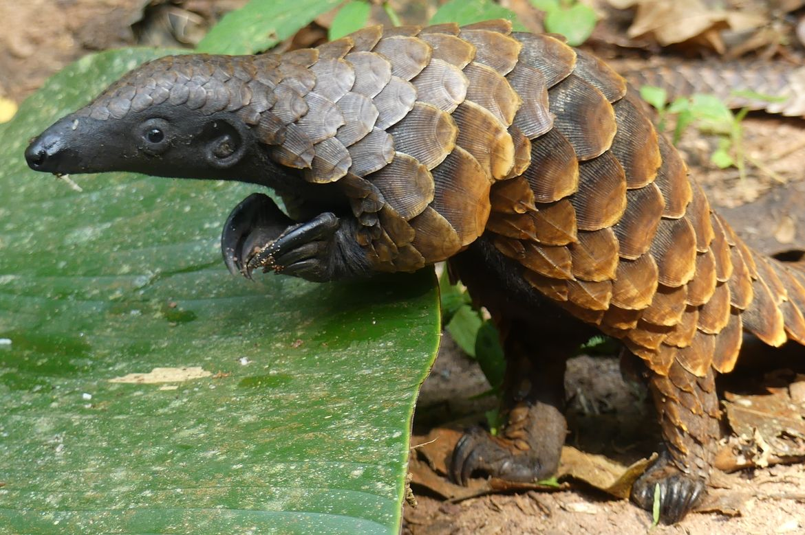
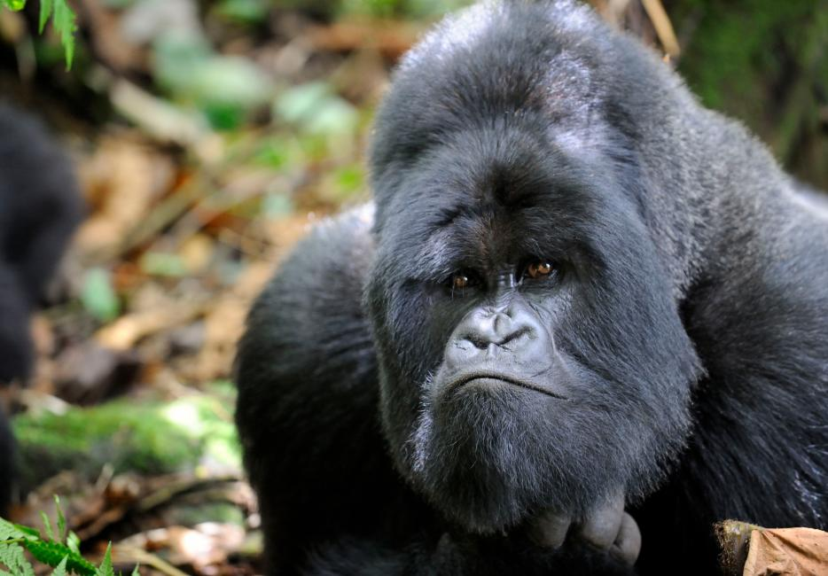
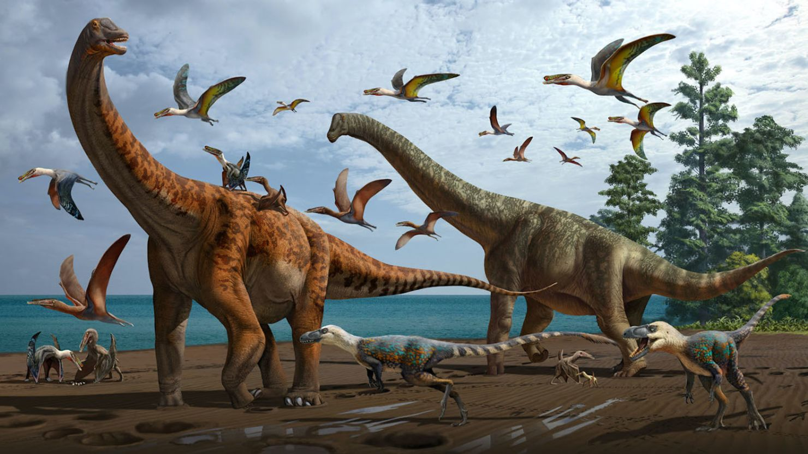
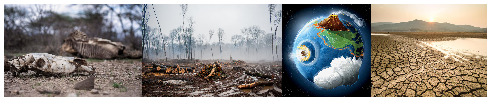

Extinction refers to the complete disappearance of a species from the Earth. The consequences of extinction are far-reaching and can have profound impacts on ecosystems, biodiversity, and ultimately, our own existence. One of the main causes of extinction is habitat loss. As human populations grow and expand, natural habitats are destroyed or fragmented to make way for agriculture, urbanization, and infrastructure development. This loss of habitat leaves many species without a suitable environment to survive and reproduce, leading to their eventual extinction. Another significant factor contributing to extinction is climate change. Rising temperatures, changing weather patterns, and the associated impacts like sea-level rise and extreme weather events disrupt ecosystems and alter the delicate balance of nature. Species that are unable to adapt to these changes quickly enough may face extinction. Human activities also play a major role in driving species to extinction. Overexploitation, such as overfishing or hunting, can deplete populations to unsustainable levels. Poaching, as we discussed earlier, threatens iconic species like elephants, rhinos, and tigers. The illegal wildlife trade not only pushes these species towards extinction but also fuels organized crime and threatens the stability of communities. Invasive species are another factor that contributes to extinction. When non-native species are introduced into new environments, they can outcompete native species for resources, disrupt natural food chains, and spread diseases. This can have devastating effects on local biodiversity, leading to the decline or extinction of native species. The loss of biodiversity due to extinction has severe consequences for ecosystems. Each species plays a unique role in maintaining the balance of nature. They provide vital ecosystem services like pollination, seed dispersal, and nutrient cycling. When a species goes extinct, it can disrupt these services, leading to cascading effects throughout the ecosystem. Extinction also has cultural and social impacts. Many indigenous communities have deep connections to the land and the species that inhabit it. When a species goes extinct, it can result in the loss of cultural practices, traditional knowledge, and spiritual beliefs. Moreover, the loss of iconic species can have a profound emotional impact on people who value and appreciate wildlife. The long-term implications of extinction are concerning. As species disappear, we lose the potential for scientific discoveries, medical breakthroughs, and the benefits they could provide to humanity. Biodiversity is often referred to as nature's "insurance policy" because it ensures the resilience and adaptability of ecosystems to future challenges. Addressing the issue of extinction requires collective action. Conservation
CAUSE OF EXTINCTION
Animal extinction is a pressing issue that affects countless species across the globe. There are several factors that contribute to the decline and eventual extinction of these animals. Let's explore some of the main causes:
1. Habitat Loss: One of the primary reasons for animal extinction is the loss of their natural habitat. Human activities such as deforestation, urbanization, and agriculture result in the destruction and fragmentation of ecosystems. This leads to the displacement and isolation of species, making it difficult for them to find food, mates, and suitable living conditions.
2. Climate Change: The changing climate poses a significant threat to many species. Rising temperatures, altered rainfall patterns, and extreme weather events disrupt ecosystems and affect the availability of resources. Animals that are unable to adapt quickly enough may struggle to survive or reproduce, leading to population decline and eventual extinction.
3. Pollution: Pollution, including air, water, and soil pollution, has detrimental effects on animal populations. Toxic chemicals and pollutants contaminate their habitats, food sources, and water bodies. This pollution can lead to reproductive issues, weakened immune systems, and even death.
4. Overexploitation: Overhunting, overfishing, and the illegal wildlife trade are major contributors to animal extinction. When animals are excessively hunted or captured for their skins, tusks, horns, or other body parts, their populations decline rapidly. This disrupts the balance of ecosystems and can lead to cascading effects on other species.
5. Invasive Species: The introduction of non-native species into new habitats can have devastating consequences for native wildlife. Invasive species often outcompete native species for resources, prey on them, or introduce diseases. This can result in the decline or extinction of native species that are unable to adapt or defend themselves.
6. Disease and Epidemics: Outbreaks of diseases, particularly those introduced by humans or other animals, can have catastrophic effects on vulnerable populations. Infectious diseases can spread rapidly and cause mass mortality, wiping out entire species or severely reducing their numbers.
It's important to note that these causes often interact and compound each other, exacerbating the risk of extinction. The loss of one species can have far-reaching impacts on the entire ecosystem, affecting other plants, animals, and even humans.
To address this crisis, it is crucial to promote conservation efforts, protect habitats, implement sustainable practices, and raise awareness about the importance of biodiversity. Every individual has a role to play. Let's do our part to protect the incredible diversity of life on our planet!
Endangered species

Africa Elephant
African elephants are nearing extinction due to poaching for ivory, habitat loss, and human-wildlife conflict. Despite global bans, illegal hunting continues to decimate populations. Expanding agriculture and urbanization fragment their habitats, increasing deadly encounters with humans. Climate change worsens food and water scarcity, further endangering these majestic animals. Urgent conservation efforts are needed to prevent the irreversible loss of African elephants from our planet.

Leopard
Leopards are facing the risk of extinction due to habitat loss, poaching, and human-wildlife conflict. Deforestation and urbanization shrink their natural habitats, forcing them into closer contact with humans, often leading to lethal outcomes. Poaching for their skins and body parts also threatens their survival. Conservation efforts are crucial to protect these elusive predators and prevent their disappearance from the wild, which would diminish global biodiversity.

Rhinos
Rhinos are on the brink of extinction due to rampant poaching and habitat loss. Targeted for their horns, which are highly valued in illegal markets, rhino populations have plummeted. Habitat destruction from agriculture and urban development further endangers these majestic animals. Conservation efforts, including anti-poaching measures and habitat preservation, are vital to save rhinos from disappearing, as their extinction would be a profound loss to global biodiversity.

Orangutan
Orangutans are facing extinction due to deforestation, illegal logging, and palm oil plantations that destroy their natural habitats. As their forests disappear, orangutans are left vulnerable to poaching and human-wildlife conflict. These critically endangered primates play a vital role in maintaining rainforest ecosystems. Urgent conservation efforts, including habitat protection and anti-poaching initiatives, are essential to prevent the extinction of orangutans and preserve the biodiversity of their forest homes.

Hawksbill Turtle
Hawksbill turtles are critically endangered due to illegal poaching for their beautiful shells, habitat loss, and climate change. Coastal development and pollution destroy their nesting sites, while rising sea temperatures threaten their survival. Overharvesting of their eggs and entanglement in fishing gear further endanger these ancient creatures. Urgent conservation efforts, including protecting nesting sites and combating illegal trade, are essential to prevent the extinction of hawksbill turtles and safeguard marine biodiversity.

Tigers
Tigers are on the brink of extinction due to poaching, habitat loss, and human-wildlife conflict. Illegal hunting for their skins and body parts has decimated their populations. Expanding agriculture and urbanization reduce their natural habitats, leading to deadly encounters with humans. Conservation efforts are critical, focusing on anti-poaching laws, habitat preservation, and community engagement, to ensure that tigers do not vanish from the wild, taking a key part of biodiversity with them.

Pangolins
Pangolins are critically endangered due to illegal poaching and habitat loss. They are the most trafficked mammals in the world, hunted for their scales, which are falsely believed to have medicinal properties, and for their meat. Deforestation further threatens their survival by destroying their natural habitats. Urgent conservation measures, including stricter law enforcement and habitat protection, are essential to prevent the extinction of pangolins and preserve their unique role in ecosystems.

Mountain Gorilla
Mountain gorillas are at risk of extinction due to poaching, habitat loss, and human-wildlife conflict. Encroaching agriculture and deforestation fragment their forest homes, while poaching and disease further threaten their survival. Despite conservation efforts, their populations remain fragile, with only a few hundred individuals left in the wild. Protecting their habitats and addressing human-gorilla conflicts are crucial to preventing the extinction of these magnificent primates and preserving their ecosystems.

Lion
Lions are endangered due to habitat loss, human-wildlife conflict, and poaching. Expanding agriculture and urban development reduce their territories, while conflicts with farmers and ranchers often result in lethal encounters. Poaching for their body parts and trophy hunting further threatens their numbers. Conservation efforts, including habitat protection, anti-poaching measures, and community engagement, are essential to prevent lion extinction and preserve these iconic predators in the wild.
Extinct Species

Dodo Bird
The dodo bird, was a unique and flightless bird that once inhabited the island of Mauritius in the Indian Ocean. These birds had a peculiar appearance with a large beak and plump body. Sadly, due to human interference, including hunting and the introduction of invasive species, the dodo bird went extinct in the late 17th century. The dodo's extinction serves as a stark reminder of the impact humans can have on fragile ecosystems and the importance of conservation efforts to protect endangered species. It's a real shame we can't see these fascinating birds in person anymore.

Woolly Mammoth
The woolly mammoth, These magnificent creatures were like giant, shaggy elephants with long, curved tusks. They roamed the icy tundras of the Northern Hemisphere during the Ice Age. Sadly, the woolly mammoths went extinct around 4,000 years ago. It's believed that a combination of climate change and human hunting contributed to their demise. However, some scientists are working on bringing them back through cloning and genetic engineering. Can you imagine seeing these colossal creatures walking the Earth again? It's truly mind-boggling!

Tasmanian Tiger
The Tasmanian tiger, Also known as the thylacine, it was a unique marsupial with tiger-like stripes on its back. These incredible creatures were native to Tasmania, Australia, and New Guinea. Tragically, the last known Tasmanian tiger died in captivity in 1936, marking their extinction. The main reasons for their decline were habitat loss and hunting, as they were mistakenly believed to be a threat to livestock. It's a real shame we can't witness the beauty of these striped marsupials in the wild anymore. Let's hope we can learn from their story and protect other endangered species.

Passenger Pigeon
The passenger pigeon was once one of the most abundant bird species in North America, with flocks so massive they would darken the sky. These social birds had a remarkable ability to navigate and communicate with each other. However, due to extensive hunting and habitat destruction, their population rapidly declined. The last known passenger pigeon, named Martha, died in captivity in 1914, marking the extinction of this once-thriving species. The story of the passenger pigeon serves as a powerful reminder of the impact human activities can have on the natural world and the importance of conservation efforts to protect vulnerable species.

Pyrenean Ibex
he Pyrenean ibex, These magnificent creatures were a subspecies of ibex found in the Pyrenees Mountains. Sadly, the Pyrenean ibex went extinct in 2000, making it the first species to become extinct twice. Scientists attempted to bring them back through cloning, but the last surviving clone died shortly after birth. It's a heartbreaking story, but it reminds us of the importance of conservation efforts to protect endangered species. Let's work together to ensure that other incredible animals don't face the same fate.

Quagga
he quagga was a unique subspecies of zebra that once roamed the grasslands of South Africa. It had a beautiful coat with stripes on its front half and a brownish color on its back half. Sadly, due to extensive hunting and habitat loss, the quagga went extinct in the late 19th century. It's a real shame we can't see these fascinating creatures grazing on the African plains anymore. But hey, let's keep our eyes open for other incredible animals out there that need our help to thrive!

Saber-Toothed Tiger
The saber-toothed tiger, my friend! These magnificent creatures, also known as Smilodons, were fearsome predators with long, curved canine teeth. They roamed the lands of North and South America during the Ice Age, hunting down their prey with their powerful jaws and sharp teeth. Unfortunately, like many other prehistoric animals, the saber-toothed tigers went extinct around 10,000 years ago. The exact reasons for their extinction are still debated among scientists, but factors such as climate change and competition for resources may have played a role. It's fascinating to imagine these incredible predators prowling the ancient landscapes.

Dinosaurs
Around 65 million years ago, a catastrophic event wiped out the dinosaurs. Most scientists believe that a massive asteroid impact in what is now Mexico was the main cause. This impact caused widespread devastation, including massive fires, tsunamis, and a global climate change. The aftermath led to the extinction of not only the dinosaurs but also many other species. However, some dinosaur descendants, like birds, survived and continue to thrive today. It's mind-boggling to think about the incredible world of dinosaurs that once existed.
CONSERVATION EFFORT
Conservation efforts are crucial in protecting endangered species and preventing their extinction. These efforts involve various strategies and initiatives aimed at preserving habitats, increasing populations, and raising awareness. One important conservation effort is the establishment of protected areas. These areas, such as national parks and wildlife reserves, are created to safeguard habitats and provide a safe haven for endangered species. They are managed to minimize human interference and preserve biodiversity. Habitat restoration is another key conservation strategy. By restoring degraded habitats, such as reforestation or wetland restoration, we can create suitable environments for endangered species to thrive. Removing invasive species is also important in restoring the balance of ecosystems. Breeding and reintroduction programs are implemented to increase the population of endangered species. These programs involve carefully managing captive populations, ensuring genetic diversity, and reintroducing individuals into their natural habitats to boost wild populations. Anti-poaching efforts are crucial in protecting endangered species from illegal hunting and trade. Conservation organizations work closely with law enforcement agencies to combat poaching activities, strengthen anti-poaching laws, and raise awareness about the consequences of wildlife trafficking. Engaging local communities is also an essential part of conservation efforts. By involving communities in conservation initiatives, providing education programs, and promoting sustainable practices, we can create a sense of ownership and ensure long-term success. International agreements and legislation, such as CITES, regulate the trade of endangered species and their products. These agreements help combat illegal wildlife trade and protect endangered species on a global scale. National legislation also plays a vital role in protecting species within individual countries. Research and monitoring are ongoing to understand the needs and behaviors of endangered species. This knowledge informs conservation strategies and allows for adaptive management to address emerging threats. Public awareness and advocacy are crucial in garnering support for conservation efforts. By raising awareness about the importance of biodiversity and the threats faced by endangered species, we can inspire action and drive policy changes. By combining these efforts and working together, we can make a significant impact in preventing the extinction of endangered species and preserving our planet's incredible biodiversity.
IMPACT ON ECOSYSTEM
The extinction of species can have a significant impact on ecosystems. When a species goes extinct, it disrupts the delicate balance of the ecosystem and can have far-reaching consequences. Firstly, every species plays a unique role in the ecosystem, often referred to as its ecological niche. Each species has specific interactions with other species and the environment, such as pollination, seed dispersal, or predator-prey relationships. When a species becomes extinct, these interactions are lost, leading to a disruption in the ecosystem's functioning. For example, let's say a particular plant species goes extinct. If that plant was the primary food source for a specific herbivore, the loss of the plant could result in a decline in the herbivore population. This, in turn, could affect the predators that rely on the herbivores as their food source. The ripple effect continues throughout the ecosystem, impacting other species and their interactions. Furthermore, biodiversity is essential for ecosystem resilience and stability. A diverse ecosystem is better equipped to withstand environmental changes, such as climate fluctuations or disease outbreaks. When species go extinct, the overall biodiversity of the ecosystem decreases, making it more vulnerable to disturbances. Additionally, many species contribute to ecosystem services that benefit humans. For example, bees and other pollinators play a crucial role in pollinating crops, ensuring food production. The loss of pollinator species could have severe consequences for agriculture and food security. Overall, the extinction of species can lead to a loss of biodiversity, disrupt ecological interactions, and impact ecosystem services. It highlights the interconnectedness of all living organisms and emphasizes the importance of conservation efforts to protect endangered species and preserve the health and balance of ecosystems.

SOLUTION AND ACTION
Hey! It's important to take action to address the issue of extinction. Here are a few solutions and actions we can take:
1. Conservation efforts: Supporting and participating in conservation organizations and initiatives can help protect endangered species and their habitats. These efforts can include habitat restoration, captive breeding programs, and public education.
2. Sustainable practices: Adopting sustainable practices in our daily lives can help reduce our impact on the environment and protect biodiversity. This can include reducing waste, using eco-friendly products, supporting sustainable agriculture, and practicing responsible tourism.
3. Protecting natural habitats: Preserving and protecting natural habitats is crucial for the survival of many species. This can involve creating and maintaining protected areas, enforcing regulations against habitat destruction and illegal wildlife trade, and promoting sustainable land-use practices.
4. Research and monitoring: Continued research and monitoring of species and ecosystems can provide valuable insights into their conservation needs. This information can help inform conservation strategies and management plans.
5. Education and awareness: Raising awareness about the importance of biodiversity and the impacts of extinction is essential. By educating ourselves and others, we can inspire action and encourage individuals, communities, and governments to prioritize conservation efforts.
Remember, every little action counts, and together we can make a difference in protecting our planet's incredible biodiversity!